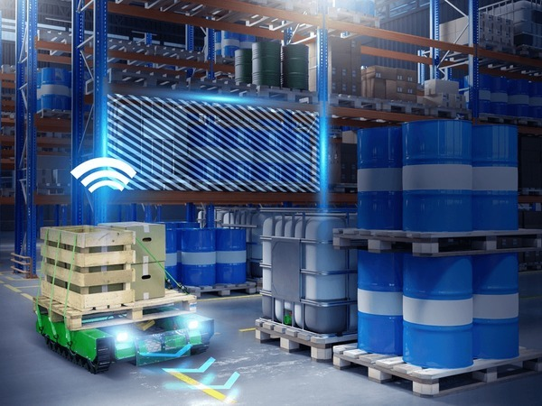

Explorando os cenários de uso do CargoBot em AGVs industriais.
Esses sensores detectam a linha preta sobre um fundo branco e enviam sinais ao microcontrolador, que ajusta os motores para manter o robô no percurso correto.
Além disso, estamos estudando a possibilidade de integrar sensores ultrassônicos para evitar colisões e melhorar a eficiência do sistema.